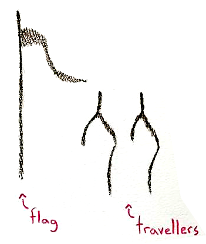
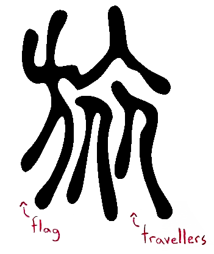

Even in modern-day Japan, tour guides leading
groups using flags is a common sight at the train
station or airport.


The bone script character shows a flag
with two people standing beside it indicating a
succession of people. This morphed into a flag-bearer left,
a flag waving top-right, and two people bottom-right.